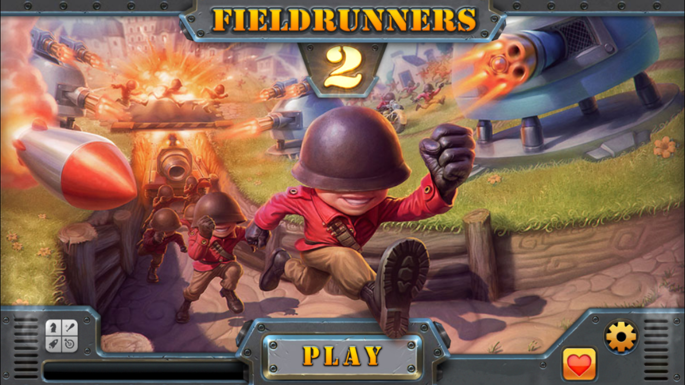
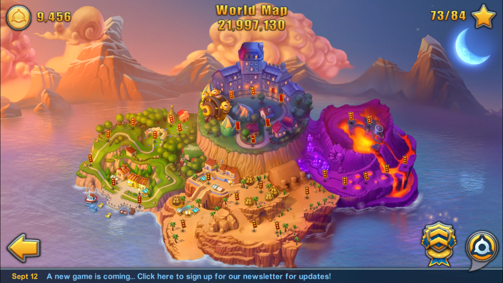
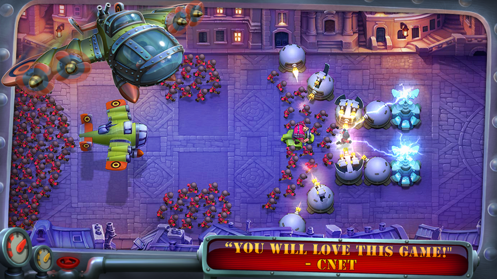
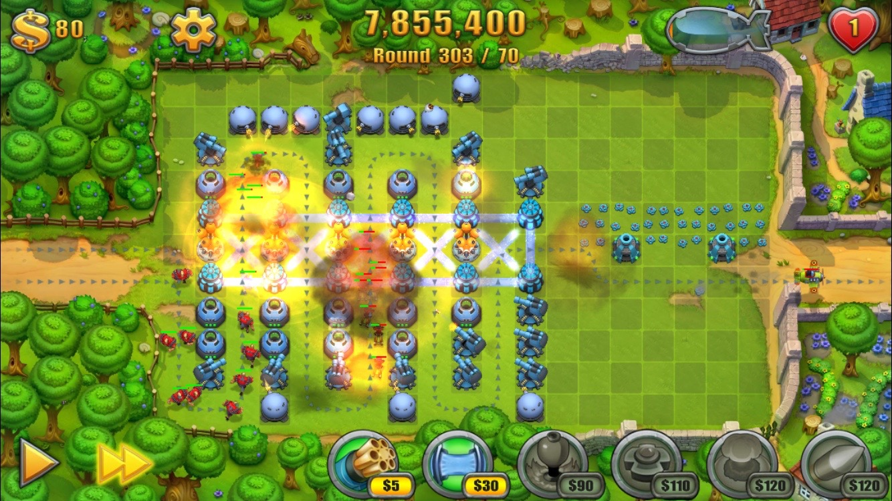
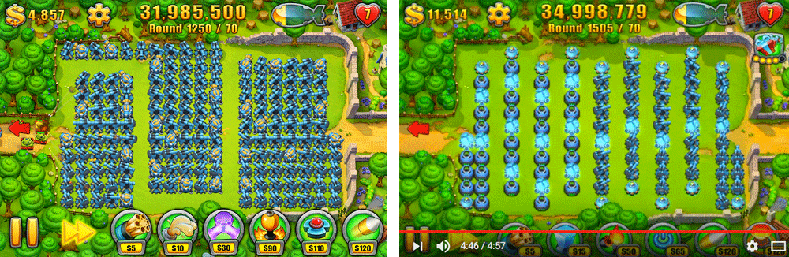

最近准备戒玩一款游戏，因为它最近占用了我很多的时间。它并不是一款什么网游，只是一个iPhone的独立塔防小游戏。为了不让它陪伴我的这些时光被遗忘，我决定记录一下这款名叫 坚守阵地 的游戏，英文叫 Fieldrunners。

这款游戏的开发团队是 Subatomic Studios。这个位于剑桥的小游戏工作室，当年不满意手机上大部分游戏体验，于是立志要给手机用户带来，类似主流游戏平台的高质量的游戏体验。坚守阵地 这款塔防游戏2008年就登上app store，赢得大量粉丝，还被时代杂志评为2008年的十大游戏。其后2012年，他们推出了 坚守阵地2 ，从画面上，武器种类，敌人种类等都做了大量提升。这些官话就不多说了。


这款塔防游戏最大的特点就是它的空白地图，无限模式。在此之前玩过的许多塔防游戏，敌人行走的路线都是固定好的，不会变化。而Fieldrunners里的敌人在地图里是会计算最优路线的，并且一堆敌人在往前冲的时候，如果后面的敌人发现前面太挤了，还会自己变更路线。这在当时手机塔防游戏里可谓独一无二。
最经典的还是它的空白地图模式，整个地图没有任何阻挡，需要你放置武器去规划路线，只要不死可以无限玩下去。这个可玩性就很强了，有许多的可能性可以想象。我自己只能最多撑到300多轮，后来实在没辙了，上网看了一下国外网友的视频，看到了几种能撑到1800多轮的方案。然而最终因为时间原因，也就懒得去试了，真要坚持到1800多轮，估计得玩上大半天。这对于一个手机小游戏来说实在难得。之前的纪念碑谷这样的经典游戏，当我玩完也不会想再碰。而Fieldrunners却可以让人有空时总想再试试。


然而这么优秀的游戏，及其制作团队。后来竟然再也没有更新和新的作品了。不知道这个团队的人还在不在，或者已经解散了。在手机网游那么火的年代，这种独立小游戏，的确很难生存。许多人愿意在网游上充值上百，上千。却都不愿意去购买一个正版游戏。Fieldrunners是我买过最贵的手机app了，当时好像是花了50元人民币。从它陪伴我的时间上看，是值得的，付款时内心的想法是：希望开发团队的成员能受到一点鼓励，激发他们以后再做点什么。
FieldRunners 2 下载地址: https://itunes.apple.com/us/app/fieldrunners-2/id527358348?mt=8